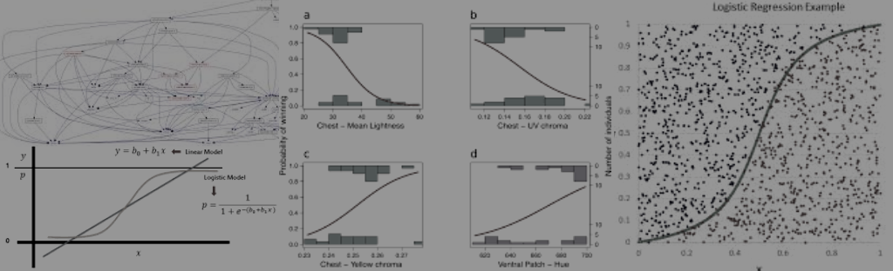
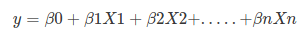
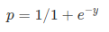
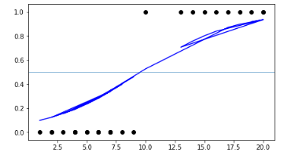
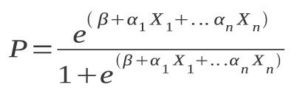
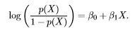
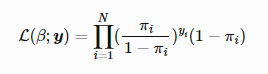

Logistic Regression is an example of a classification algorithm which is used to find a relationship between features and probability of a particular outcome. The term “Logistic” is taken from the Logit function that is used in this method of classification. Logistic Regression is tremendously useful in medical diagnosis given some specific symptoms and parameters. Like for example, logistic regression is used to detect early stages of breast cancer given certain parameters like age, past history, genetic factors, etc.
The name ‘Logistic Regression’, comes from it’s underlying technique which is quite the same as Linear Regression. Like all regression analysis, Logistic regression is an example of predictive analysis. However unlike regular regression, the outcome calculates the predicted probability of mutually exclusive event occurring based on multiple external factors. It can thus be considered as a special case of linear regression where the target variable is categorical in nature. Linear regression has a considerable effect on outliers. To avoid this problem, log-odds function or logit function is used. It uses a log of odds as the dependent variable. Logistic Regression predicts the probability of occurrence of a binary event utilizing a logit function. The independent variables in logistic regression should be independent of each other. That is, the model should have little or no multicollinearity. This model works best on large sample sizes with independent variables having linear relation to the log odds.
We have already seen in the Linear Regression blog, the linear regression equation is:

Here, y is dependent variable and X1, X2 … and Xn are explanatory variables. The sigmoid function can be written as:

The sigmoid function gives an S-shaped curve. It always gives a value of probability ranging from 0  If we apply the sigmoid equation to the linear regression equation, we have:
 Logistic regressions involve the regression coefficients as a superscript to the value of e. This means that the coefficients have an effect on the probability. As an effect on probability, the coefficients represent odds instead of simple numerical relationships.
The fact that the coefficients represent odds ratios is particularly useful in light of the fact that the logistic regression predicts probabilities instead of a particular outcome.
Logistic regression can be expressed as:  where, the left hand side is called the logit or log-odds function, and p(x)/(1-p(x)) is called odds.
The odds signifies the ratio of probability of success to probability of failure. Therefore, in Logistic Regression, linear combination of inputs are mapped to the log(odds) — the output being equal to 1. The dependent variable in logistic regression follows Bernoulli Distribution. To know more about Bernoulli Distribution, head over to my Intro to ML live with DSC NSEC YouTube session. Estimation is done through maximum likelihood. Unlike linear regression model, that uses Ordinary Least Square for parameter estimation, we use Maximum Likelihood Estimation.
There can be infinite sets of regression coefficients. The maximum likelihood estimate is that set of regression coefficients for which the probability of getting the data we have observed is maximum.
If we have binary data, the probability of each outcome is simply π if it was a success, and 1−π otherwise. Therefore we have the likelihood function:  To determine the value of parameters, log of likelihood function is taken, since it does not change the properties of the function.
The log-likelihood is differentiated and using iterative techniques like Newton method, values of parameters that maximize the log-likelihood are determined. No R Square, Model fitness is calculated through Concordance, KS-Statistics. 03-03-2020Logit Function:
Some important features of Logistic Regression: